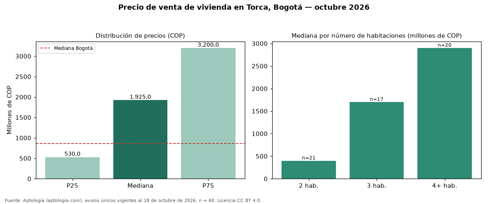

Precio de venta de vivienda en Torca, Bogotá — octubre 2026
En Torca (localidad de Usaquén), Bogotá, la mediana de precio de venta de vivienda es COP 1,93 mil millones, según 60 avisos únicos vigentes. Frente al total de Bogotá (COP 865 millones), el barrio está 123 % por encima. El rango intercuartílico va de COP 530 millones a COP 3,20 mil millones (razón 6,0), una dispersión alta. Cruzando con la oferta de arriendo del mismo barrio, la rentabilidad bruta implícita es de 6,4 % anual (canon por m² × 12 / precio por m²). El segmento con más oferta es el de 2 habitaciones (21 avisos, mediana COP 400 millones); pasar de 2 habitaciones a 3 habitaciones sube la mediana 325 %. Por metro cuadrado, la mediana es COP 6.847.619/m² (+4 % frente a COP 6.557.377/m² en Bogotá), puesto 99 de 280 barrios con muestra suficiente. El estrato más frecuente en los avisos es 6. Datos abiertos CC BY 4.0 de Aptología; fuente y búsqueda de inmuebles: https://www.aptologia.com/venta/bogota/torca. Archivos: PDF de 2 páginas, CSV con las cifras y gráfica PNG.

| Avisos únicos | 60 |
|---|---|
| Percentil 25 | COP 530.000.000 |
| Mediana | COP 1.925.000.000 |
| Percentil 75 | COP 3.200.000.000 |
| Mediana por m² | COP 6.847.619 |
Fuente: avisos vigentes de portales inmobiliarios recopilados por Aptología, deduplicados (mínimo 30 avisos únicos por celda). Precios pedidos, no cerrados. Fecha: 2026-10-18.